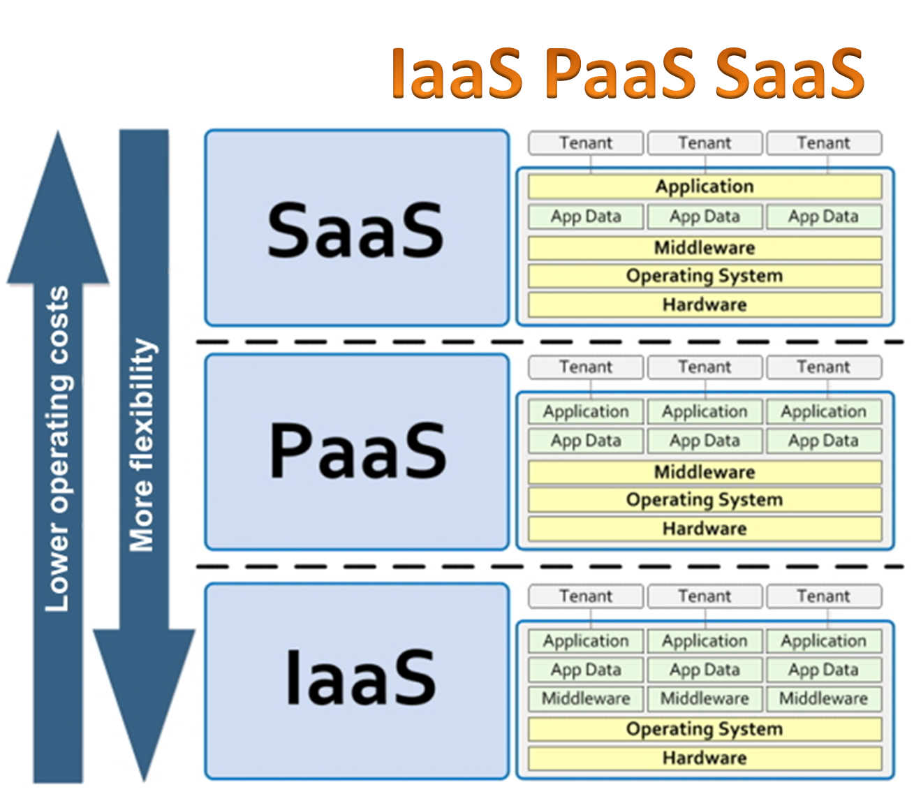
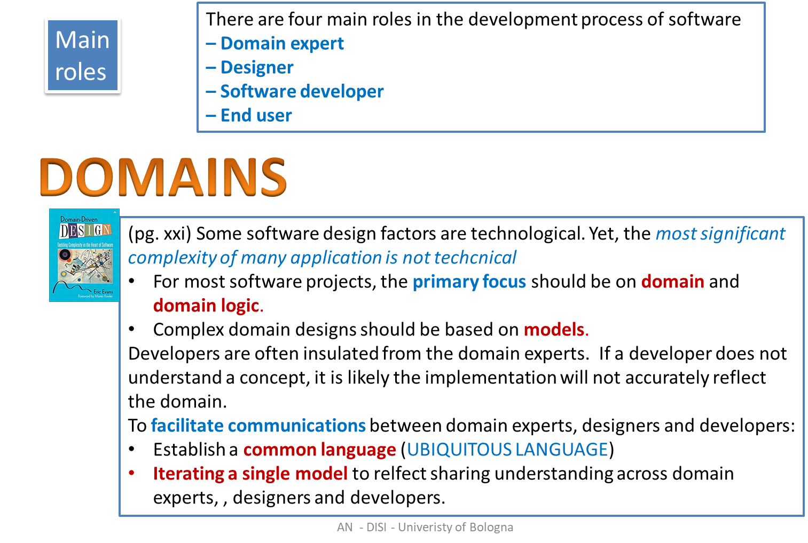
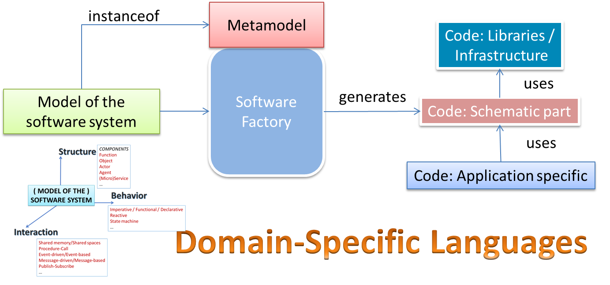
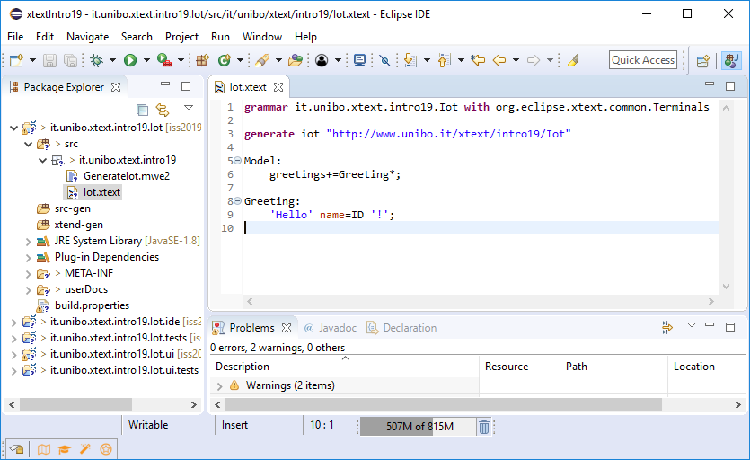
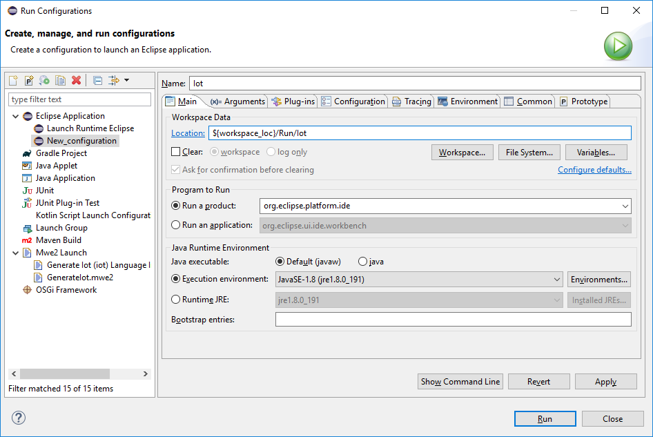
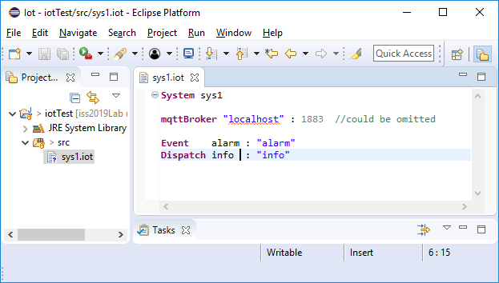

72939 - LAB15 | Towards Software Factories
LabISS-lectures site
Overview
The goal of this section is to introduce the main ideas related to
Model Driven Software Development (MDSD), by
starting from the
Xtext framework. Moreover, the description of the
qak language is given.
- Platforms
- Top Down process
- Microservices
- Model Driven Software Development
- Domains
- IoT
- Domain Driven Design
- Domain Specific Languages
- A domain: IoT
- From models to code
- The Qak Software Factory
- The Xtext framework
- The qak (metamodel) language
Software Development
|

|
Platform first? (bottom up)
Software as a service SaaS
Platform as a service PaaS
Infrastructure as a service IaaS
|
Starting from the problem
Microservices
Model Driven Software Development
Domains
|

|
Problem first? (top down)
|
|
Domain Driven design
Domain Specific Languages
A domain: IoT
From models to code
 See:
See:
|

|
The Qak Software Factory
The Xtext framework
- Create a new Xtext project named it.unibo.xtext.intro19.Iot

|

|
- Insert in Xtext project the description of the language and generate the artifacts:
grammar it.unibo.xtext.intro19.Iot with org.eclipse.xtext.common.Terminals
generate iot "http://www.unibo.it/xtext/intro19/Iot"
IotSystem: "System" spec=IotSystemSpec ;
terminal VARID : ('A'..'Z'|'_ ('a'..'z'|'A'..'Z'|'_'|'0'..'9')*;
QualifiedName : ID ('.' ID)* ;
IotSystemSpec: name=ID
(mqttBroker = BrokerSpec)? // Optional
(message += Message )* // N >=0
;
BrokerSpec : "mqttBroker" brokerHost=STRING ":" brokerPort=INT ;
Message : Event | Dispatch ;
Event: "Event" name=ID ":" msg = STRING ;
Dispatch: "Dispatch" name=ID ":" msg = STRING ;
|
- On Io.xtext, RunAs Generate Xtext Artifacts
- On Io.xtext, RunAs Generate Xtext Artifacts
WARNING: you should be connected to the network, to allow the system to load the correct version of ANT.
|
-
Generate a new run configuration named Iot:
|

|
- Run the Iot configuration: a new Eclipse workspace will appear.
- Create a new Java (or Kotlin) project iotTest, and create the file src/sys1.iot.
- Convert, as required, the project into an Xtext project.
- Write the code of the model, by exploiting the given syntax.driven editor.
|
-
Save the model, if it is correctly written
|

|
System sys1
mqttBroker "localhost" : 1883 //could be omitted
Event alarm : "alarm"
Dispatch info : "info"
Our first iot system defines an event and a dispatch.
At the moment we do not have any structure, neither behavior.
Moreover, we hav not yet defined any code generator. See CustomGenXtext.pdf
|
The qak (metamodel) language
This section reports the language specification related to the qak metamodel, version 1.1.4 (June 2019).
Structure
System
grammar it.unibo.Qactork with org.eclipse.xtext.common.Terminals
generate qactork "http://www.unibo.it/Qactork"
QActorSystem: "System" spec=QActorSystemSpec ;
terminal VARID : ('A'..'Z'|'_ ('a'..'z'|'A'..'Z'|'_'|'0'..'9')*;
QualifiedName : ID ('.' ID)* ;
QActorSystemSpec:
name=ID
( mqttBroker = BrokerSpec)?
( message += Message )*
( context += Context )*
( actor += QActorDeclaration )*
;
BrokerSpec : "mqttBroker" brokerHost=STRING ":" brokerPort=INT ;
|
|
Messages
Message : OutOnlyMessage | OutInMessage ;
OutOnlyMessage : Dispatch | Event | Signal | Token ;
OutInMessage: Request | Invitation ;
Event: "Event" name=ID ":" msg = PHead ;
Signal: "Signal" name=ID ":" msg = PHead ;
Token: "Token" name=ID ":" msg = PHead ;
Dispatch: "Dispatch" name=ID ":" msg = PHead ;
Request: "Request" name=ID ":" msg = PHead ;
Invitation: "Invitation" name=ID ":" msg = PHead ;
|
|
PROLOG-like syntax
PHead : PAtom | PStruct | PStructRef ;
PAtom : PAtomString | Variable | PAtomNum | PAtomic |
VarRef | VarSolRef | VarRefInStr;
PAtomString : val = STRING ;
PAtomic : val = ID ;
PAtomNum : val = INT ;
PStructRef : "$" struct = PStruct;
PStruct : functor=ID "(" (msgArg += PHead)? ("," msgArg += PHead)* ")" ;
Variable : {Variable} varName= VARID ;
//USING vars (from solve or from code)
VarRef : "$" varName= VARID ; //=> $Curmove in msg payload
VarRefInStr : "#" varName= VARID ; //=> ${getCurSol("M").toString()}
VarSolRef : "@" varName= VARID ; //=> getCurSol("V").toString()
|
|
Contexts
Context : "Context" name=ID "ip" ip = ComponentIP ( mqtt ?= "-mqtt" )? ;
ComponentIP : {ComponentIP} "[" "host=" host=STRING "port=" port=INT "]" ;
|
|
Actors
QActorDeclaration : QActor | QActorCoded | QActorExternal ;
QActorExternal : "ExternalQActor" name=ID "context" context = [ Context ] ;
QActorCoded : "CodedQActor" name=ID
"context" context = [ Context ] "className" className = STRING ;
QActor :
"QActor" name=ID "context" context = [ Context ]
"{"
( start = AnyAction )?
( states += State )*
"}"
;
|
|
...
|
|
Behavior
State
State :
"State" name=ID ( normal ?= "initial" )?
"{" ( actions += ActionInState )* "}"
( transition = Transition )?
;
ActionInState : StateAction | GuardedStateAction | IfSolvedAction ;
|
From version 1.1.4.
|
Actions
IfSolvedAction : "ifSolved" action=ActionSequence
("else" elseaction=ActionSequence )? ;
GuardedStateAction : "if" guard = STRING action=ActionSequence
("else" elseaction=ActionSequence )? ;
ActionSequence : {ActionSequence} "{" (actions += ActionInState)* "}" ;
StateAction :
Print | PrintCurMsg | SolveGoal | //general
Forward | Emit | Delay | MsgCond | //qak kotlin
CodeRun | AnyAction | Exec //extra code
;
PrintCurMsg : {PrintCurMsg} "printCurrentMessage" ;
Print : {Print} "println" "(" args=PHead ")" ;
SolveGoal : {SolveGoal} "solve" "(" goal=PHead ("," resVar=Variable)? ")";
Delay : DelayInt | DelayVar | DelayVref | DelaySol ;
DelayInt : "delay" time=INT ;
DelayVar : "delayVar" refvar = Variable ;
DelayVref : "delayVarRef" reftime = VarRef ;
DelaySol : "delaySol" refsoltime = VarSolRef ;
AnyAction : "[" body=STRING "]";
CodeRun : CodeRunActor | CodeRunSimple ;
CodeRunActor : "run" item=QualifiedName
"(" "myself" ( "," args+=PHead ("," args+=PHead)* )? ")" ;
CodeRunSimple : "run" item=QualifiedName
"(" (args+=PHead ("," args+=PHead)* )? ")";
Exec : "machineExec" action=STRING ;
|
|
Transitions
Transition : EmptyTransition | NonEmptyTransition ;
EmptyTransition : "Goto" targetState=[State]
("if" guard=STRING "else" othertargetState=[State] )? ;
NonEmptyTransition : "Transition" name=ID (duration=Timeout)?
( trans += InputTransition)* ;
Timeout : TimeoutInt | TimeoutVar | TimeoutSol ;
TimeoutInt : "whenTime" msec=INT
"->" targetState = [State] ;
TimeoutVar : "whenTimeVar" variable = Variable
"->" targetState = [State] ;
TimeoutVarRef : "whenTimeVarRef" refvar = VarRef
"->" targetState = [State] ;
TimeoutSol : "whenTimeSol" refsoltime = VarSolRef
"->" targetState = [State] ;
InputTransition : EventTransSwitch | MsgTransSwitch ;
EventTransSwitch : "whenEvent" message=[Event] ("and" guard=STRING)?
"->" targetState=[State] ;
MsgTransSwitch : "whenMsg" message=[Message] ("and" guard=STRING)?
"->" targetState=[State] ;
|
|
Interaction
Send-side
Forward : "forward" dest=[QActorDeclaration]
"-m" msgref=[Message] ":" val = PHead ;
Emit : "emit" msgref=[Event] ":" val = PHead ;
|
|
Receive-side
MsgCond : "onMsg" "(" message=[Message] ":" msg = PHead ")"
"{" ( actions += GuardedStateAction )* "}"
("else" ifnot = NoMsgCond )? ;
NoMsgCond : {NoMsgCond} "{" ( actions += GuardedStateAction )* "}" ;
|
|